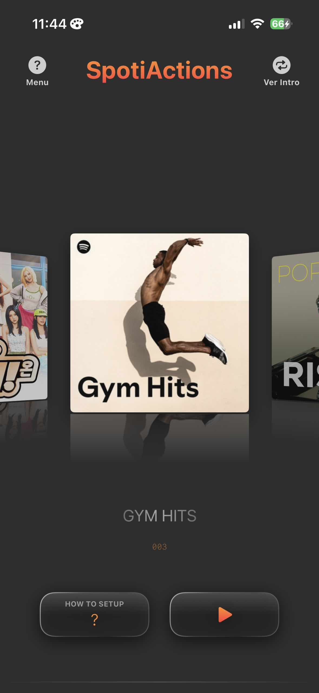
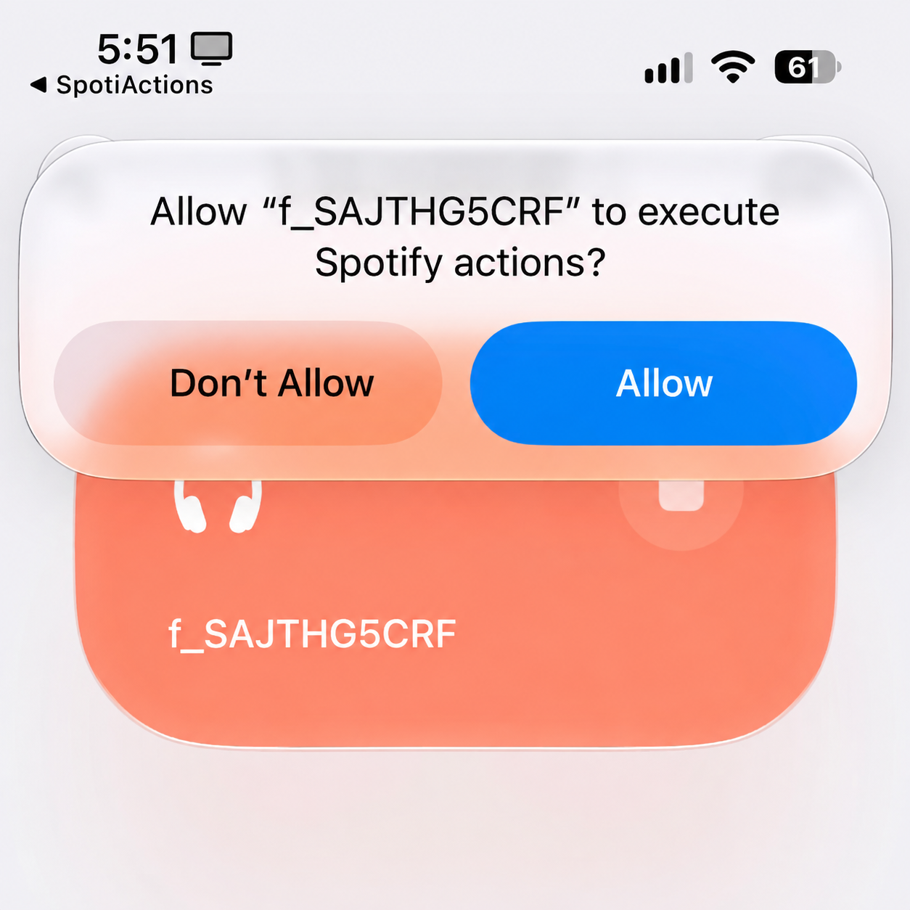
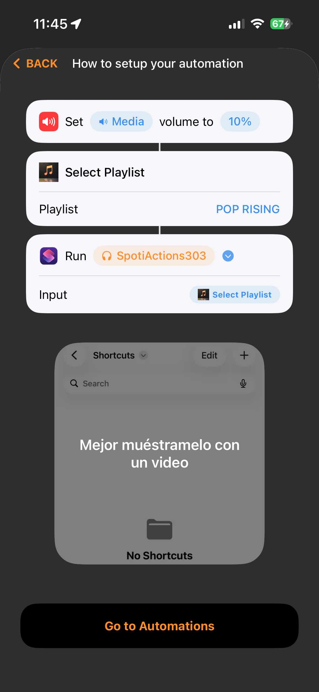
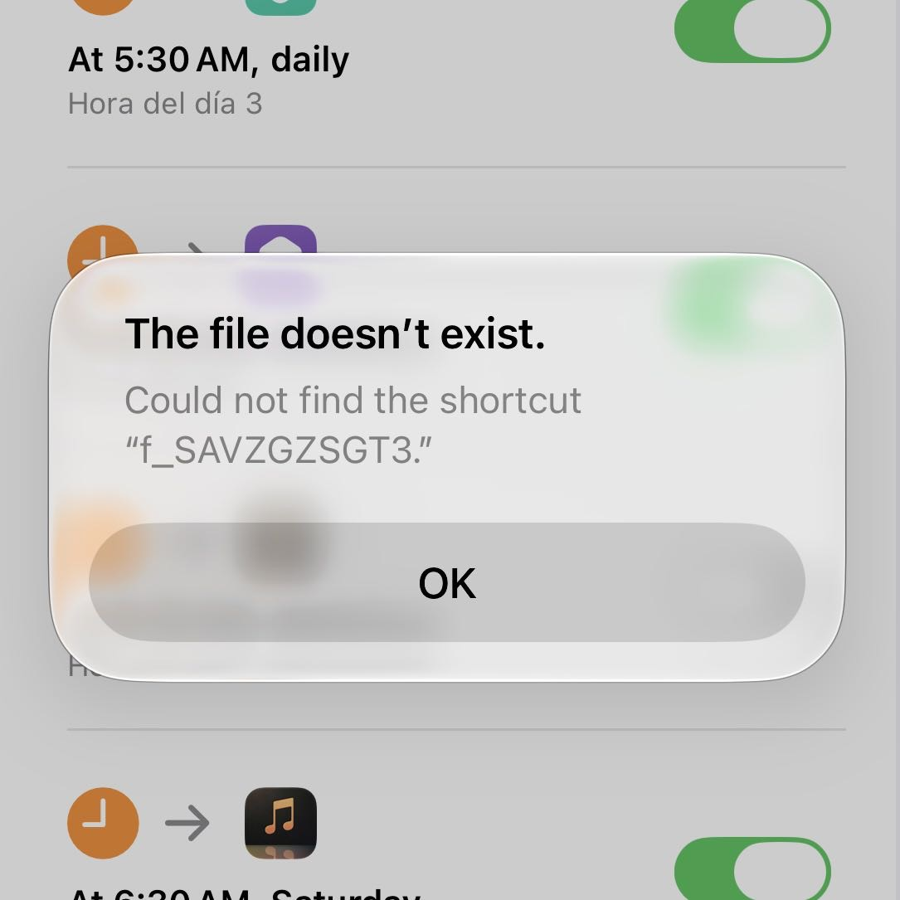
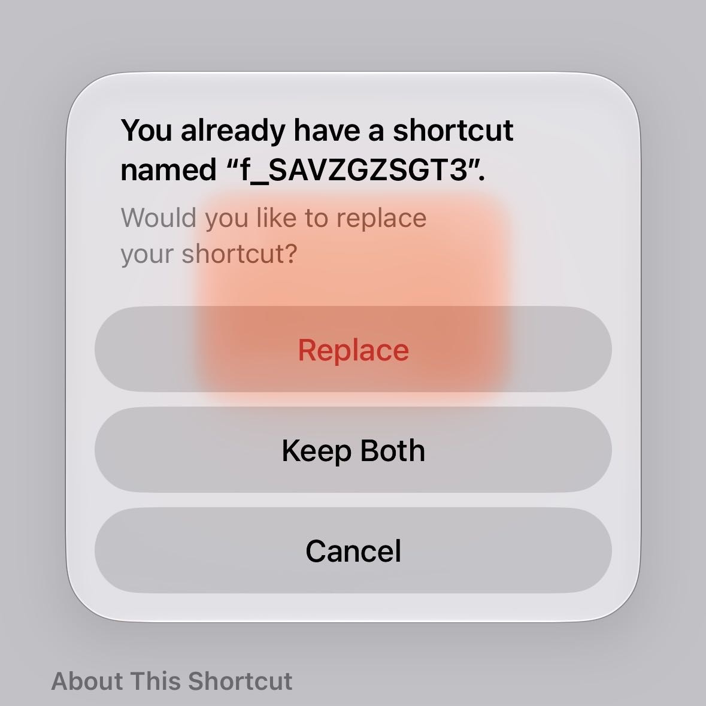

Set it up in three steps
Each playlist is its own ready-made shortcut. You install it once, allow it once, and it can wake you up every morning after that.
Install a playlist
Tap a cover on the main screen. iOS opens the share sheet: choose Shortcuts and add it.

Allow it once
The first time it runs, iOS asks to let the shortcut run Spotify actions. Tap Allow. Once per playlist, and never again.

Automate it
In Shortcuts › Automation, pick a trigger —a time, connecting to CarPlay, arriving home— and add Select Playlist followed by Run Shortcut.

Set the automation to Run Immediately. With “Ask Before Running”, iOS waits for a tap — and at 6 AM nobody taps, so the alarm stays silent.
Fix a problem
The issues people actually run into, and how to get past them.
“Could not find the shortcut f_SA…”
The automation is pointing at a playlist whose shortcut isn't in your Shortcuts library — it was deleted, or the install never finished.

- Open the Shortcuts app and search for the name in the message (it starts with f_SA). If there's a leftover copy, delete it.
- In SpotiActions, go to that playlist and use Menu › Reinstall current playlist — or long-press its cover.
- Play it once so iOS asks for permission, and tap Allow.
Shortcuts says “You already have a shortcut named…”
Tap Cancel. You already have that playlist; SpotiActions marks it as installed either way.

Don't tap Keep Both: it creates a duplicate named “… 2” that clutters your library and can confuse later reinstalls. And don't tap Replace either.
It asks me to allow “Spotify actions”
That's expected: iOS asks once per playlist, the first time its shortcut runs. Tap Allow and it won't ask again.
Tapped Don't Allow by mistake? Play the playlist again from SpotiActions. If iOS doesn't ask anymore, delete that shortcut in the Shortcuts app and use Menu › Reinstall current playlist.
The automation runs, but nothing plays
Go through these, in order — one of them is almost always it:
- The automation is set to Run Immediately, not “Ask Before Running”.
- You played that playlist once by hand and tapped Allow. Until then iOS stops to ask, and nobody answers at 6 AM.
- Run Shortcut uses the result of Select Playlist as its input — not a name typed by hand.
- Spotify is installed on the same iPhone and you're logged in.
The app says a playlist isn't installed, but I have it
This happens after deleting and reinstalling SpotiActions: your shortcuts stay in the Shortcuts app, but the app forgets which ones you have. iOS doesn't let an app check.
Under the cover, next to “Not installed yet”, tap I already have it. No need to install it again.
The widget doesn't play from CarPlay
Your iPhone has to be unlocked. A widget can only start a playlist by opening SpotiActions, and iOS never opens an app from a widget while the phone is locked. That's an iOS rule, not something the app can change — which is why the widget shows “Unlock iPhone to play”.
For fully hands-free music in the car, use an automation instead: When CarPlay connects › Select Playlist › Run Shortcut. Automations do run with the phone locked.
A playlist in the widget opens the app instead of playing
That playlist isn't installed yet — the widget comes with three to start, and you may not have installed them. The app offers to install it right there; do it once, and next time the widget plays it directly.
Can I use my own Spotify playlist?
Yes, with Premium — one playlist of your own, with your own songs. Go to Settings › Your playlist, paste its Spotify link and send it. Within 5 days an Install button appears in the same place.
In your automation, use the Personalized Playlist action followed by Run Shortcut.
Everything else in the app is a catalogue of ready-made playlists: SpotiActions can't read or import your Spotify library.
My playlist request was rejected, or never arrives
The playlist has to be public. In Spotify, open it, make it public, and send the link again — the reason for a rejection appears right in Settings › Your playlist.
Also check you're signed in to iCloud on your iPhone: requests are sent through it. If five days have passed with no answer, write to us.
I paid, but I see the purchase screen
Open Settings › Restore Purchase. It's also the first thing to do on a new iPhone.
Bought SpotiActions back when it was a paid app? You don't need to buy anything again: the app recognises you automatically and gives you full access.
How do I get a refund?
Apple handles every App Store purchase, so refunds are requested from Apple — developers can't issue them. Go to reportaproblem.apple.com, sign in, pick SpotiActions and request it.
What's free and what's paid?
The app is free to download and you can try three playlists — any except the five Personalized ones.
A single payment unlocks every playlist, the ones added later, the widget and your own playlist. No subscription: nothing renews and nothing expires. Playlists you already installed keep working whatever you decide.
Do I need Spotify Premium?
No. It works with Spotify Free and Premium. On Spotify Free, Spotify itself may play a playlist in shuffle — that's a limit of Spotify Free, not of SpotiActions.
Does it work with my iPhone locked?
Automations, yes — that's what makes it work as an alarm, as long as they're set to Run Immediately. The widget, no: iOS needs the phone unlocked to start anything from a widget.
What do I need?
- iPhone with iOS 17.6 or later
- Apple's Shortcuts app — free, and preinstalled on most iPhones
- Spotify on the same iPhone, logged in
Nothing matches “”. Tell us what's happening and we'll help.
Email supportStill stuck?
Write to us with your iPhone model, iOS version and what you see. A screenshot saves a lot of back and forth.
support@myiosapps.org